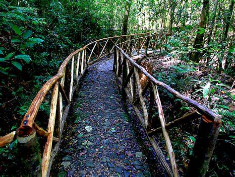

MAPA DE MORAZÁN

Información
Morazán es un departamento ubicado en la zona nororiental de El Salvador. Su cabecera departamental es San Francisco Gotera. Es una región con una fuerte identidad histórica y cultural, marcada por su papel en el conflicto armado salvadoreño. Actualmente, es reconocido por su ecoturismo, sitios arqueológicos y la calidez de su gente.

Datos Históricos
El departamento de Morazán fue creado el 14 de julio de 1875 y lleva su nombre en honor a Francisco Morazán, un prócer de la independencia centroamericana. Durante la Guerra Civil de El Salvador (1980-1992), Morazán fue un bastión de la guerrilla del FMLN, y en la actualidad alberga el Museo de la Revolución en Perquín, que documenta este período de la historia salvadoreña.

Lista de Municipios
- Arambala
- Cacaopera
- Chilanga
- Corinto
- Delicias de Concepción
- El Divisadero
- El Rosario
- Gualococti
- Guatajiagua
- Joateca
- Jocoaitique
- Jocoro
- Lolotiquillo
- Meanguera
- Osicala
- Perquín
- San Carlos
- San Fernando
- San Francisco Gotera
- San Isidro
- San Simón
- Sensembra
- Sociedad
- Torola
- Yamabal
- Yoloaiquín
Centros Turísticos
Morazán ofrece varios destinos turísticos de interés, como el Museo de la Revolución en Perquín, que conserva artefactos y fotografías del conflicto armado. También es famoso por el Río Sapo, uno de los ríos más limpios de El Salvador, ideal para ecoturismo. Otros sitios destacados son las ruinas de la antigua Radio Venceremos y las montañas de Arambala.

Lagos
Morazán no cuenta con grandes lagos, pero posee varias lagunas pequeñas, como la Laguna de Corinto, rodeada de vegetación y con un ecosistema importante para la biodiversidad local.

Ríos
El departamento es atravesado por ríos de gran importancia ecológica y turística. Destacan el Río Torola y el Río Sapo, ambos conocidos por sus aguas cristalinas y por ser destinos populares para caminatas y observación de la naturaleza.

Volcanes
A diferencia de otros departamentos de El Salvador, Morazán no cuenta con volcanes activos. Sin embargo, su terreno montañoso ofrece vistas espectaculares y es ideal para el senderismo y el turismo de aventura.
Personajes Célebres
Algunas figuras históricas y personalidades importantes nacidas en morazan incluyen:José María Peralta Fue un líder militar y político que participó en los primeros años de la independencia de El Salvador. Nació en el municipio de San Esteban Catarina en Morazán y desempeñó un papel importante en la organización de las fuerzas en la región oriental del país durante las primeras luchas por la independencia..